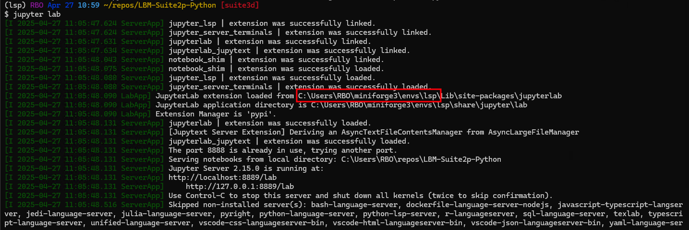

Installation Guide#
TLDR
make sure you are in a virtual environment
pip install “mbo_utilities[all]”
If you need python3.10
This package is compatible with python 3.10.
The gui dependencies often install in under a minute with python 3.11 and python 3.12.
On 3.10, pip will have to build wheels for imgui-bundle, which can take ~8 to 10 minutes.
For example, a gui install on Python 3.10 will build imgui-bundle from source, increasing the install time by several minutes.
Quick Install#
mbo_utilities has been developed to be a pure pip install.
This makes the choice of virtual-environment less relevant, you can use venv, uv (recommended), conda, it does not matter.
Tip
While this pipeline is early in development, its handing to keep a version of the codebase locally using git.
Code in the master branch is generally safe. If it isn’t please report an issue!
git clone https://github.com/MillerBrainObservatory/mbo_utilities.git
cd mbo_utilities
pip install -e ".[all]"
conda create -n mbo -c conda-forge python=3.11
conda activate mbo
pip install mbo_utilities[all]
uv pip install mbo_utilities[all]
python -m venv
source .venv/bin/activate # optional, helps avoid using a wrong environment (conda, another package .venv)
pip install mbo_utilities[all]
GUI Dependencies#
sudo apt install libxcursor-dev libgl1-mesa-dev libglu1-mesa-dev freeglut3-dev
You will need msvcc redistributable
Troubleshooting#
Environment Issues#
Many hard to diagnose installation/import bugs are due to environment issues.
The first thing you should do is check which python interpreter is being used. Generally this will point to your project like :
C:/User/Username/repos/mbo_utilities/.venv//Scripts//python.exe

In jupyter, the terminal from which you ran `jupyter lab/notebook’ will display the path to the python executable.#
Once you know its location, open a python terminal. For example, with the above .venv:
$ python
Python 3.12.6 | packaged by conda-forge | (main, Sep 22 2024, 14:16:49) [GCC 13.3.0] on linux
Type "help", "copyright", "credits" or "license" for more information.
>>> import mbo_utilities as mbo
$ uv run ipython
Python 3.11.12 (main, Apr 9 2025, 04:04:00) [Clang 20.1.0]
Type 'copyright', 'credits' or 'license' for more information.
IPython 9.2.0 -- An enhanced Interactive Python. Type '?' for help.
Tip: Use `object?` to see the help on `object`, `object??` to view its source
In [1]: import mbo_utilities as mbo
In [2]: mbo.__version__
Out[2]: '0.1.0'
Git LFS Error: smudge filter lfs failed#
If you see:
error: external filter 'git-lfs filter-process' failed
fatal: docs/source/_static/guide_hello_world.png: smudge filter lfs failed
Disable smudge during sync:
GIT_LFS_SKIP_SMUDGE=1 uv sync --all-extras --active
To debug:
git lfs logs last
This avoids downloading large binary files (e.g. images, model checkpoints) managed by Git LFS.
TODO#
Upload mp4 for animate traces
animate_traces